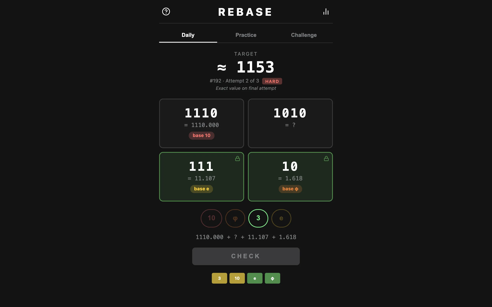

Each Rebase puzzle deals four digit strings and four number bases. You assign one base to each string, every base used once, and the four values have to add up to a target. You get three attempts with Wordle-style feedback after each. The base pool has \(\varphi\), \(\sqrt{2}\), \(e\), and \(\pi\) alongside 2, 3, 5, and 10, so the same digits mean different things depending on where you drop them. The string 1110 is worth 1110 in base 10, 39 in base 3, 14 in base 2, and about 8.472 in base \(\varphi\).
Digits in base π
A digit string evaluates to \(\sum_i d_i\,\beta^i\), and nothing in that requires \(\beta\) to be an integer. Non-integer bases go back to Rényi's 1957 paper on beta-expansions. My evaluation function is the same loop whether the base is 10 or \(\pi\).
What changes is the digit alphabet. Each digit must be smaller than the base, so base \(\varphi \approx 1.618\) and base \(\sqrt{2} \approx 1.414\) admit only 0 and 1, base \(e\) admits digits up to 2, and base \(\pi\) up to 3. A card containing a 3 can only take base 5, 10, or \(\pi\). Powers of \(\sqrt{2}\) grow slowly, so a long string in a small base stays small, and a large target forces the big bases onto the long strings.
Irrational bases have stranger properties that the game gets to ignore. Since \(\varphi^2 = \varphi + 1\), the strings 100 and 011 denote the same number in base \(\varphi\), so representations aren't unique. Rebase only ever evaluates a string to a value and never writes a value back out as digits.
Three guesses, two colors
You assign a base by dragging its chip onto a card, or tapping to pick up and place. Each card's value and the running sum update live, but the target is hidden on the first attempt, so the opening guess works from digit constraints and visible magnitudes alone. After the first guess the target appears rounded to the nearest integer, and the exact value to three decimals arrives on the final attempt.
Feedback is per card. Green means the correct base is on this card and it locks for the rest of the game. Yellow means the base is wrong here, and since every base is used once, wrong here means it belongs on another card. Solving on the first, second, or third attempt earns three, two, or one star, and the result exports as the usual grid of colored squares.
Generation by rejection
Puzzles come from a seeded generator, mulberry32 for the random stream and Fisher-Yates for every shuffle, so a seed always produces the same board. Around that is a rejection loop that throws away candidates until one passes the fairness checks.
A candidate starts with four bases from the difficulty's pool, then four digit strings. Two or three of the cards use only digits valid in every selected base, and the rest may include digits that at least two of the bases can accept. Leading digits are never zero and duplicate strings restart the attempt. Then I enumerate every assignment of bases to cards that's digit-legal and require at least four of them. With fewer, the digit constraints alone would give the puzzle away.
The target comes from the sums of those legal assignments, each rounded to three decimals. I walk them in shuffled order and pick one whose rounded sum no other legal assignment shares, so the target is unique at the precision the player sees. I also reject any solution where two card values land within 0.05 of each other, so no two cards carry near-identical numbers. After 300 failed attempts the generator falls back to a direct construction with no uniqueness check.
Puzzle 192, the one in the screenshot, dealt the cards 1110, 1010, 111, and 10 against the bases 10, \(\varphi\), 3, and \(e\). The solution is \(1110_{10} + 1010_3 + 111_e + 10_\varphi = 1110 + 30 + 11.107 + 1.618 = 1152.725\).
One seed per day
The daily seed is the date packed as YYYYMMDD, so everyone playing on the same date gets the same board, rolling over at local midnight. The puzzle number counts days from January 1, 2026. Difficulty follows the day of the week. Monday and Tuesday are easy with integer bases only. Wednesday and Thursday bring in one irrational base. Friday and Saturday have two of each. Sunday is expert, all four bases irrational and digit strings stretched to three and four digits.
Practice mode seeds a fresh puzzle from the current timestamp at whichever difficulty you pick. Challenge mode packs a seed and a difficulty index into the single number \(4s + d\), rendered in base 36 as a six-character code you can send to a friend.